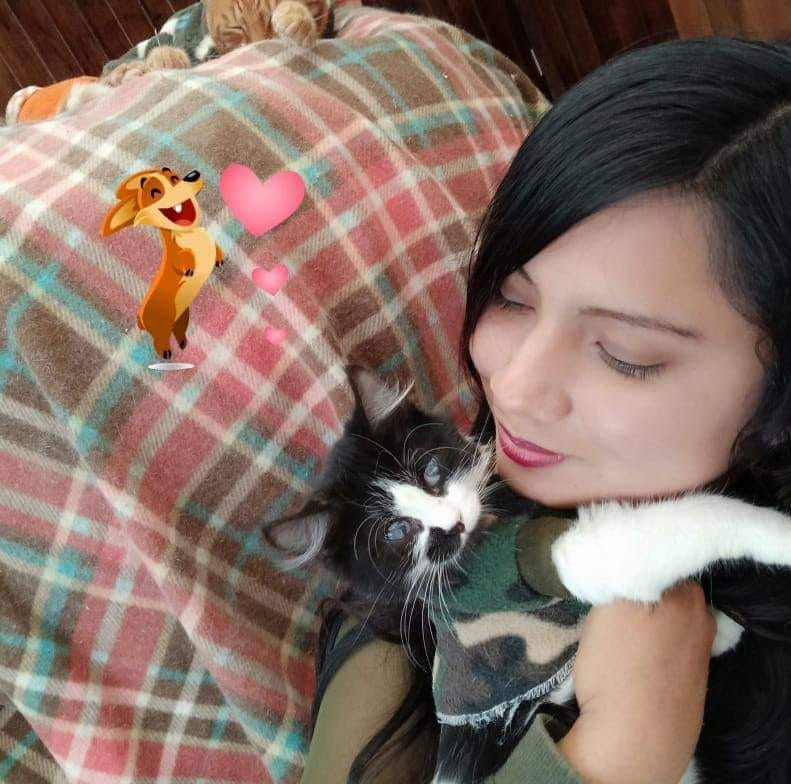
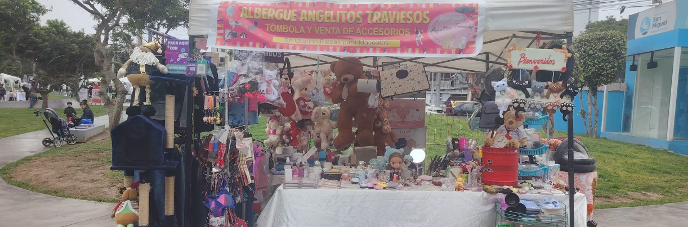

Albergue Angelitos Traviesos
Sobre Nosotros

Yessenia Tatiana Camarena Mejía
Soy la fundadora del albergue Angelitos Traviesos. Desde pequeña siempre he tenido una gran pasión por los animales y siempre he querido ayudar a aquellos que no tienen un hogar. Hace 7 años decidí fundar el albergue con el objetivo de rescatar, cuidar y buscar hogar a los animales que se encuentran en situación de calle. Gracias a la ayuda de muchas personas hemos logrado rescatar a cientos de animales y brindarles una vida digna y feliz.
¿Qué hacemos?

Nuestra misión es controlar la sobrepoblación y el abandono de
animales en la calle mediante su esterilización. Para lograr esto,
llevamos a cabo ferias y campañas de esterilización en áreas con
alta vulnerabilidad.
Nos enfocamos en rescatar perros y gatos en situaciones críticas,
brindándoles atención médica, esterilización y la oportunidad de ser
adoptados de manera responsable.
Aspiramos a un Perú donde exista una conciencia general sobre la
tenencia responsable de mascotas, con personas que adopten,
esterilicen y traten a sus animales con respeto y cariño.
160
Albergados
600
Adoptados
1600
Esterilizaciónes
800
Rescatados
Todo lo que realizamos es gracias a las ferias y rifas organizadas
ademas del apoyo de personas de gran corazón que donan y michipadrinos.
TÚ TAMBIEN PUEDES SER PARTE DE ELLOS
Adopciones
Adopta un peludito e inicia una historia de complicidad
juntos.
Apadrinamiento
Conviertete en el angel de un peludito ayúdandolo con un aporte
mensual.
Búsqueda
Ojos y oidos! hay peluditos perdidos que necesitan de nuestra
ayuda.
Donaciones
Un aporte voluntario nos ayudara a seguir con nuestro
objetivo.
Rifas
Apoya con la compra de nuestras rifas no solo ayudas sino la
oportunidad de ganarpremio para tu peludito
Voluntariado
Necesitamos de tus manos para nuestros eventos y
campañas.